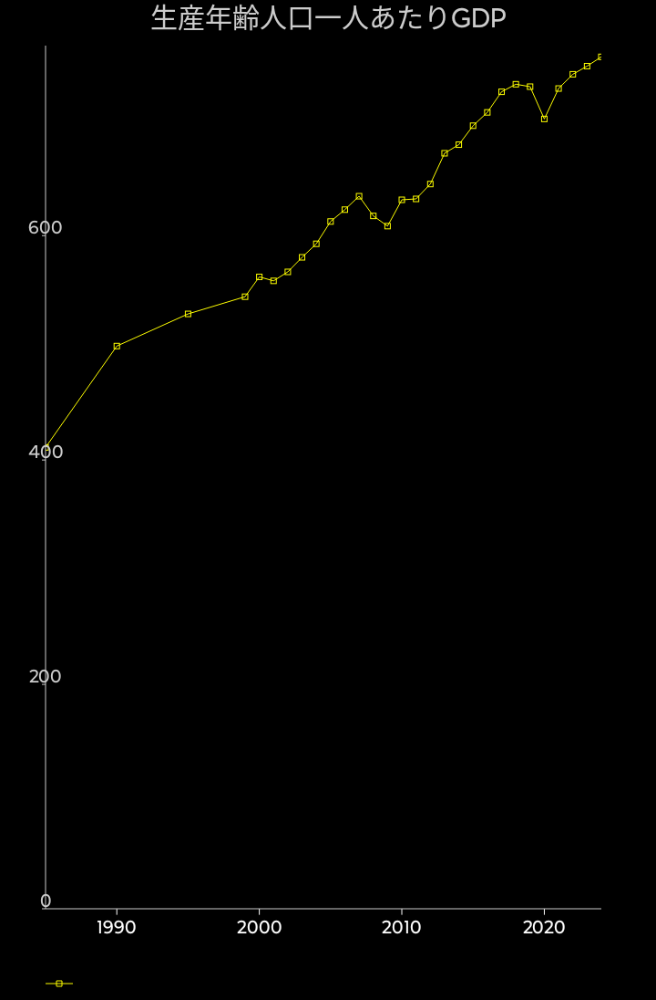

生産年齢人口一人あたりのGDP

実質GDPを生産年齢人口で割ったグラフです。
GDPの成長率を語る時に、一人あたりGDPを比較すると、生産年齢の割合が減少している国では低く出ます。
人口動態を所与とする場合、働いている人がどれくらい「うまく働いているか」とか、会社や社会がどれくらいうまく物を生み出しているかを評価するなら、労働者一人あたりか、生産年齢人口あたりのGDPを見るべきです。
生産年齢人口あたりのGDPは、失業率まで含めた結果となるので、社会全体として所与の人口動態でどれくらいうまく経済を運営しているか、を見るのに適しています。
傾きを見ると、2001年からはかなりコンスタントな成長率となっていて、その数字も国際的に比較しても悪くない。